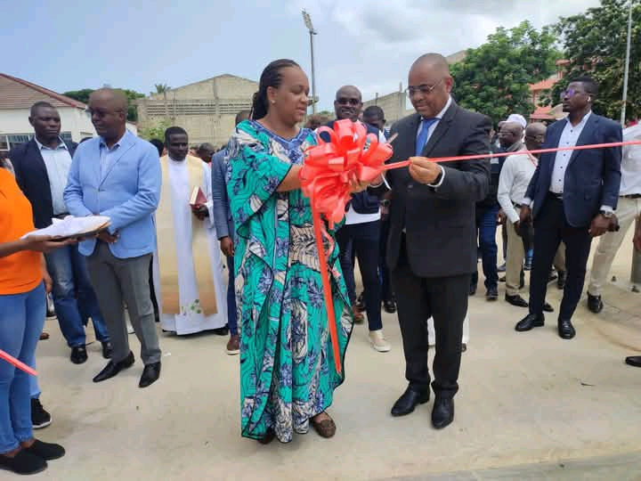

A nossa instituição, fundada desde a década de 1970 é famosa por moldar grandes engenheiros e por ter um sistema de educação inplacável. Ela conta com xxxxx turmas, 2 cursos básicos e 8 cursos Médios, com 163 professores e 19 membros da área administrativa e actualmente com mais de xxxxx alunos, onde 2995 alunos passam a frequentar os cursos técnicos do Ensino Médio em melhor acomodação após a reabilitação. A escola tem como Director o camarada António Chimpanzo, no cargo de Subdirector Pedagógico Aguinaldo Muel, e por fim Tiago Sense como Subdirector Administrativo.
A primeira fase da reabilitação da escola, inserida no PIIM (Plano Integrado de Intervenção nos Municípios), contemplando 19 salas de aula, ginásio, área administrativa, dois auditórios, balneários, campo polidesportivo, pavilhão gimnodesportivo, rampas para deficiêntes físicos, áreas verdes, etc. As obras foram feitas pela empresa Tecnovia Angola, com a participação de 160 cidadão nacionais e 10 estrangeiros, orçadas em 1.263.423.870 kz, tiveram a duração de 16 meses até o corte da fita, na quinta-feira 25/01/2024.
A governadora provincial de Cabinda, Mara Quiosa, desejou melhor aproveitamento aos alunos, e recomendou o empenho de todos, na prevenção da infra-estrutura, para que possa servir gerações futuras.
Mara Quisoa adiantou que na segunda fase, serão reabiltadas e apetrechadas outras importantes áreas do IPC. para mais informações assista o vídeo abaixo: